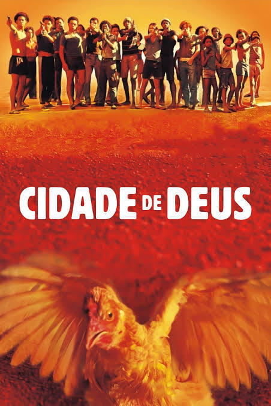

RESUMO
Dois amigos crescem na violenta favela Cidade de Deus, no Rio de Janeiro. Buscapé teme o crime e encontra no talento para a fotografia uma chance de mudar seu destino. Já Dadinho, que se torna Zé Pequeno, cresce envolvido no tráfico e vira um dos criminosos mais temidos da região. O filme mostra como suas vidas seguem caminhos opostos, apesar da mesma origem. Através da câmera de Buscapé, vemos a rotina da favela marcada por violência. A história retrata a dureza e o ciclo de criminalidade no local.